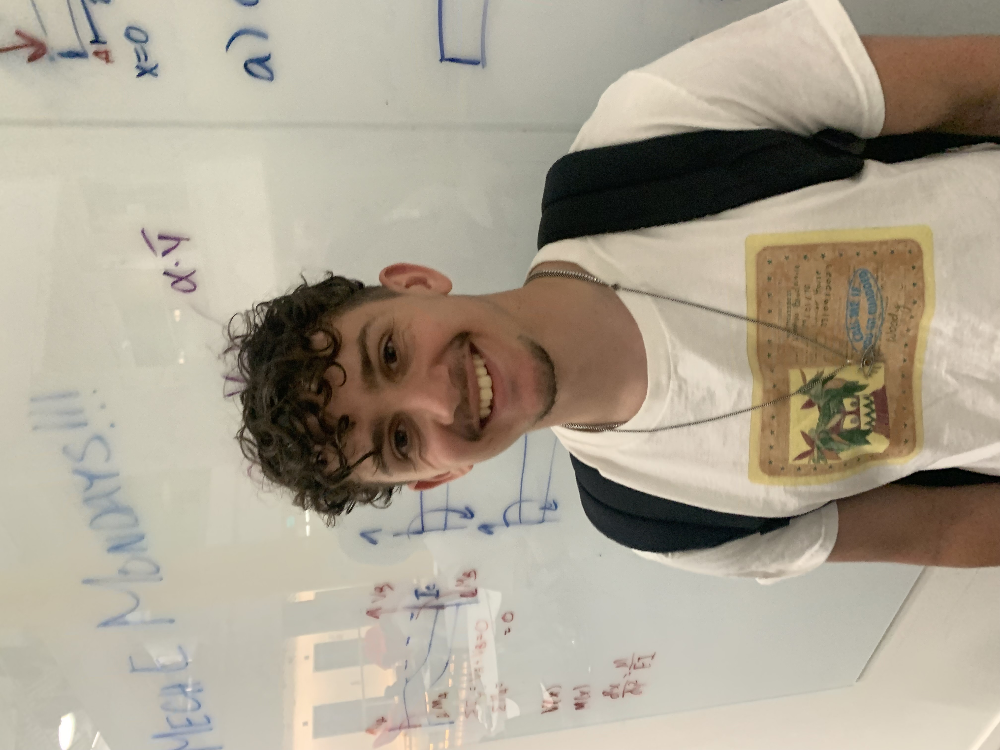
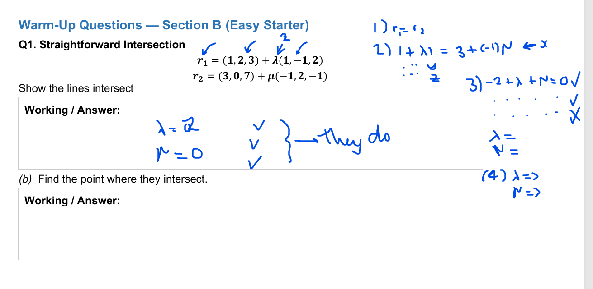

Closing the guidance gap for Welsh students aiming high — STEM tutoring, university admissions, US applications, and bilingual support in English and Welsh.

After growing up in Wales and studying Mechanical Engineering at Harvard, I noticed a clear gap: many Welsh students have the ability to compete for top universities, but far fewer have access to the mentorship, application knowledge, and confidence-building support that students in better-resourced areas take for granted.
I started this work to make that path more visible and more navigable — especially for students targeting Russell Group and highly selective international universities. The goal is not tutoring as a product; it is building a practical support system that helps talented students translate potential into outcomes.
Academic support — structured tutoring for GCSE, A-Level, and university STEM. University guidance — planning, positioning, essays, and interview preparation. US admissions support — SAT/ACT preparation and application strategy for students exploring American universities. Sessions available in both English and Welsh.
I work like an engineer: diagnose the problem, build a plan, iterate quickly, and track progress. For academics, that means identifying where marks are being lost and fixing those patterns. For applications, it means turning a student's story into a clear, credible narrative — without trying to manufacture someone into a different person.
Gallery
